This scene is not unlocked yet in your progress
To the Way Things Should Be

"I am the one called Shigatsu Youka"
"Is this your wish? You want to... see Nii-sama?"
"I am the one called Shigatsu Youka"
"Itohime! Can you hear me!? You've been waiting for Nii-sama all this time, haven't you!?"
"I am the one called Shigatsu Youka"
"Is this your wish? You want to... see Nii-sama?"
"I am the one called Shigatsu Youka"
"Itohime! Can you hear me!? You've been waiting for Nii-sama all this time, haven't you!?"
"I am the one called Shigatsu Youka"
"Is this ugly form what you want!?
Is this how you want Nii-sama to see you!? Nii-sama went off to help the poor!
How sad do you think he'd be if he knew what you've done!? Are you going to go on showing this disgrace forever!?"
"I am Nii... -sama... I am"
"I am Nii... -sama... I am"
"What you're doing isn't for Nii-sama! It isn't for you either!
A monster called Shigatsu Youka just led you astray! Wake up..."
"I want you"
"Come to Motoki-cho with me!"
"I want you to k i ll me"
"I want you"
"Come to Motoki-cho with me!"
"I want you to k i ll me"
"Itohime...!"
"I want you to de― s― troy― ― me― Destroy me"
"Are you really... sure that's what you want...?"
"I am beyond saving... I beg you Natsumi-san...!"
"I want you to de― s― troy― ― me― Destroy me"
"Are you really... sure that's what you want...?"
"I am beyond saving... I beg you Natsumi-san...!"
The hyphae that had me bound were slashed to pieces.

I dropped straight down onto the piled-up cherry blossoms.
Thanks to the blossoms being thicker than I'd imagined, I felt almost no pain.
Thanks to the blossoms being thicker than I'd imagined, I felt almost no pain.
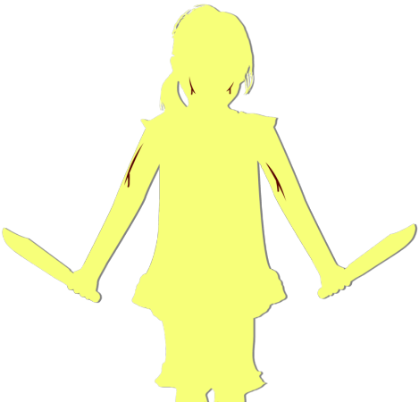
"Natsumi-chan! Are you okay!?
Ow ow ow... my leg..."
"Kana-chan...!"
Shigatsu Youka had been distracted by me, and it seemed Kana-chan had used that opening to climb all the way up.
But Kana-chan's leg seemed to be at its limit too. She must have squeezed out the last of her strength.
"Kana-chan...!"
Shigatsu Youka had been distracted by me, and it seemed Kana-chan had used that opening to climb all the way up.
But Kana-chan's leg seemed to be at its limit too. She must have squeezed out the last of her strength.

"Natsumi, you okay!?"
"Y-yeah!"
"Y-yeah!"

"Thank goodness! Operation Cherry Cushion is a success!"
Come to think of it, the blossoms were piled up oddly high just here.
They seemed to have heaped the blossoms up right beneath me.
Come to think of it, the blossoms were piled up oddly high just here.
They seemed to have heaped the blossoms up right beneath me.
But even if I'm saved, unless we destroy Shigatsu Youka, there's no escaping from here.
And not only that. Motoki-cho will sink into this sea of fungus.
So... So the only thing I can do now is this.
And not only that. Motoki-cho will sink into this sea of fungus.
So... So the only thing I can do now is this.
"Everyone, lend me your strength."
Itohime's words had reached me. She wanted to be destroyed.
For that, I need everyone's strength.
Itohime's words had reached me. She wanted to be destroyed.
For that, I need everyone's strength.
"Kana-chan, lend me the knife."
"Huh?"
"Huh?"
Kana-chan was about to hand it to me, but before she could, I snatched the knife away.
And then―
And then―
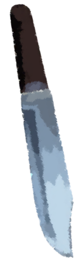
I drove it into my arm as hard as I could.
"Ngh...!"
"Natsumi! What the hell are you doing!"
"Don't touch me! Don't touch me... This is the only way for us to make it out of here."
Right after the cold of the knife, the pain came through as heat.
"Natsumi! What the hell are you doing!"
"Don't touch me! Don't touch me... This is the only way for us to make it out of here."
Right after the cold of the knife, the pain came through as heat.

"Senpai, don't tell me...
that blood is for us..."
"Goto, there's no other way."
"Goto, there's no other way."

"What do you mean, what are we going to do..."
"Anyone who touches Senpai's blood becomes third generation. You understand what that means, right?"
That's Goto for you, quick on the uptake.
Yes, that's what I'm aiming for.
"Anyone who touches Senpai's blood becomes third generation. You understand what that means, right?"
That's Goto for you, quick on the uptake.
Yes, that's what I'm aiming for.
Kana-chan's blood alone isn't enough? Then we just need more third generation.
For that, everyone just has to touch my blood.
With five people's worth of blood, we should be able to do serious damage even to Shigatsu Youka.
For that, everyone just has to touch my blood.
With five people's worth of blood, we should be able to do serious damage even to Shigatsu Youka.


"Ahahahaha! N-n-n-Natsumi-chan, aren't you f-f-f-forgetting something important!?"
"Gahahaha! If you d-d-d-do that, it's the start, the s-s-s-start of the slaughter show!"
The slaughter show starts...?
"Gahahaha! If you d-d-d-do that, it's the start, the s-s-s-start of the slaughter show!"
The slaughter show starts...?
"Senpai, I'm sorry, but this plan won't work.
The Green-Eye Curse-Killing will set in, and we'll end up killing each other..."
"Can't you just grit your teeth and hold it back?"
"Mm... That's completely impossible... It's like a spinal reflex, there's no holding it back."
"Can't you just grit your teeth and hold it back?"
"Mm... That's completely impossible... It's like a spinal reflex, there's no holding it back."
"Ahahahaha! N-n-n-Natsumi-chan, aren't you f-f-f-forgetting something important!?"
"Gahahaha! If you d-d-d-do that, it's the start, the s-s-s-start of the slaughter show!"
"Gahahaha! If you d-d-d-do that, it's the start, the s-s-s-start of the slaughter show!"

"Gh gh gh...! Natsumi-san...!
Hurry...!"
Itohime was still writhing as if in torment.
It seemed the wills of Itohime and Shigatsu Youka were still at war.
Shigatsu Youka can't interfere right now, so this is our only chance, but...
Itohime was still writhing as if in torment.
It seemed the wills of Itohime and Shigatsu Youka were still at war.
Shigatsu Youka can't interfere right now, so this is our only chance, but...
"Ahahahaha! Now let's go to Motoki-cho to Motoki-cho to Motoki-cho!"
"Kill them all kill them all kill them all"
"Kill them all kill them all kill them all"

Then countless hyphae stretched up out of the ground again.
"Strangle them strangle them strangle them"
"Hang them hang them hang them hang them hang them hang them"
Itohime's will may have been at work, since they moved sluggishly, but as long as this whole area is Shigatsu Youka's territory, these hyphae will come after us wherever we run.
"Hang them hang them hang them hang them hang them hang them"
Itohime's will may have been at work, since they moved sluggishly, but as long as this whole area is Shigatsu Youka's territory, these hyphae will come after us wherever we run.
"Hanging is too soft too soft too soft too soft"
"Scatter the spores scatter the spores scatter the spores scatter the spores scatter the spores"
"N-no...! Stop...! Don't... kill these people...! My strength... isn't enough anymore...!"
"Scatter the spores scatter the spores scatter the spores scatter the spores scatter the spores"
"N-no...! Stop...! Don't... kill these people...! My strength... isn't enough anymore...!"
Itohime's strength failing would mean being strangled and dissolved by the spores.
Kana-chan was putting blood on her knife and slashing them away, but against this many, it looked like wasted effort.
Is there nothing left we can do?
Kana-chan was putting blood on her knife and slashing them away, but against this many, it looked like wasted effort.
Is there nothing left we can do?
"Sorry to keep you waiting."
"Phew, I'm beat, I'm beat."
From behind came voices so easygoing they didn't fit the tension at all.
"Phew, I'm beat, I'm beat."
From behind came voices so easygoing they didn't fit the tension at all.

There stood a great crowd of people wearing Noh masks and red robes.
"Natsumi-chan, this is what you wanted, right? It seems Kotaro was thinking the same thing."
"Mom came by just as we were getting ready at the settlement. It took time to break open that hole underground so we could get through."
"Natsumi-chan, this is what you wanted, right? It seems Kotaro was thinking the same thing."
"Mom came by just as we were getting ready at the settlement. It took time to break open that hole underground so we could get through."
The two voices were, without a doubt, Erika-chan's and Kotaro-san's.
But because of the Noh masks and red robes, I couldn't tell who was who.
But because of the Noh masks and red robes, I couldn't tell who was who.


"Erika-chan, go back to the settlement and ask for reinforcements."
"Natsumi-chan, what are you suddenly―"
"We need as many people as we can get! Hurry, and bring Noh masks and red robes for everyone!"
"Grandma, Natsumi's intuition is back! Do what Natsumi says for now!"
"Understood. Best hurry."
"Natsumi-chan, what are you suddenly―"
"We need as many people as we can get! Hurry, and bring Noh masks and red robes for everyone!"
"Grandma, Natsumi's intuition is back! Do what Natsumi says for now!"
"Understood. Best hurry."
This was what I had asked Erika-chan to do.
I hadn't known why, but I had felt that to avoid the danger we would need lots of Noh masks and red robes.
I hadn't known why, but I had felt that to avoid the danger we would need lots of Noh masks and red robes.
"A-a-a-a-Bro w-w-w-what do you mean to d-d-d-do with those"
"Eiichiro, sinking to a monster... It's just what it looks like. For it to sense danger, it has to see its target or hear its voice. If the precognition doesn't work, the Green-Eye Curse-Killing can't happen. After we touch Natsumi-chan's blood, if we don't say a single word, what happens then? The curse-killing doesn't happen, does it? And with this many of us, it doesn't take much blood either."
"Eiichiro, sinking to a monster... It's just what it looks like. For it to sense danger, it has to see its target or hear its voice. If the precognition doesn't work, the Green-Eye Curse-Killing can't happen. After we touch Natsumi-chan's blood, if we don't say a single word, what happens then? The curse-killing doesn't happen, does it? And with this many of us, it doesn't take much blood either."
"'The dead come forth from the underworld, and uncanny bewitching flowers rise in rows.
Those who have become corpses also become bewitching flowers and come forth from the underworld.
Only the green-eyed prevail.
Those who have become green-eyed wither the bewitching flowers and return the dead to the underworld.
The descendants shall without fail don masks and blood-red garb, and resist.'
Shigatsu Youka―our ancestors' wisdom for standing against it."
"K-k-k-Kotaro w-w-w-w-what do you mean to do to me"
"Sakura... it pains me, but let's end it here. When I die, wait for me on the other side."
Then the residents came trooping toward me.
And one after another, they touched my wound with their bare hands.
"Sakura... it pains me, but let's end it here. When I die, wait for me on the other side."
Then the residents came trooping toward me.
And one after another, they touched my wound with their bare hands.
"K-k-k-kill them kill them kill them kill them"
"Now's the time now's the time now's the time now's the time"
"Now's the time now's the time now's the time now's the time"
All at once, the hyphae went for the residents, starting to wind around them.
Or so I thought, but the hyphae only squirmed around the residents and made no move to wrap around them.
Or so I thought, but the hyphae only squirmed around the residents and made no move to wrap around them.
"W-w-w-w-why c-c-can't we k-kill them!!!??"
"They're bleeding they're bleeding they're bleeding!!"
"They're bleeding they're bleeding they're bleeding!!"
"I see! Everyone came here with cuts already made!
They all touched Kogori-senpai's blood and became third generation!
Now Shigatsu Youka can't even touch them.
And no one is killing anyone! The plan worked!"
"Spores spores spores spores"
"Kill them with spo... Itohime stop getting in the way!"
"Everyone... hurry...!"
"Kill them with spo... Itohime stop getting in the way!"
"Everyone... hurry...!"
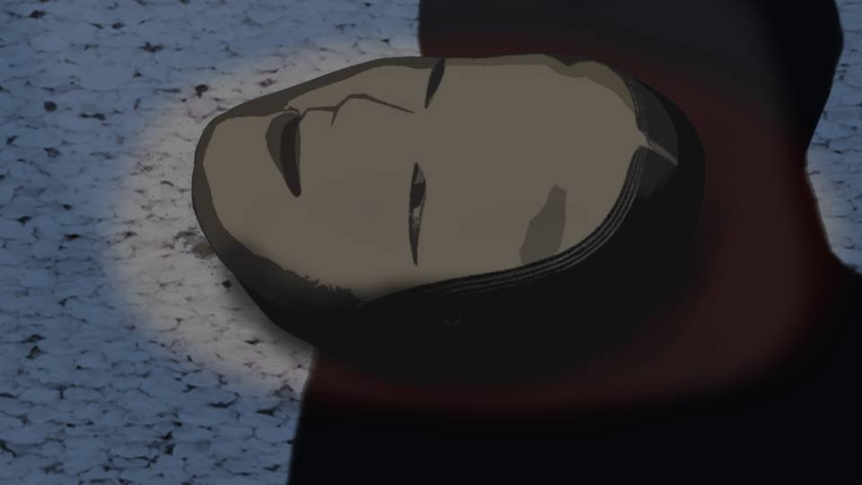
Then one of the residents flung Noh masks and red robes over toward Haruka.
Haruka and the others each took up a Noh mask and a red robe.
Haruka and the others each took up a Noh mask and a red robe.
"Natsumi, keep your eyes closed.
If you don't see us, it's perfect."
"Okay, got it."
"Next time we meet, it will all be over. All of us together will end it."
"Yeah. Let's end it. All of us."
"Yeah."
"Okay, got it."
"Next time we meet, it will all be over. All of us together will end it."
"Yeah. Let's end it. All of us."
"Yeah."
―When I closed my eyes, a different scene came into view.
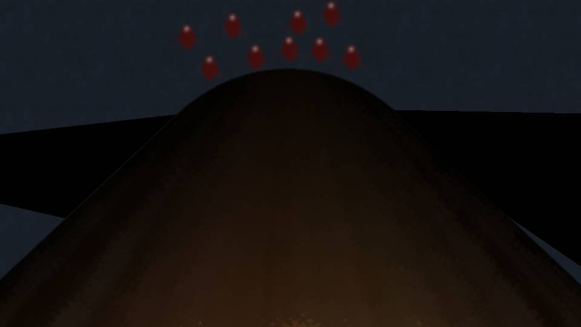

 video: 盗視.wmv
video: 盗視.wmvThis was a view from high up―
Itohime's view.
Right now, Itohime and I were linked by our senses.
Right now, Itohime and I were linked by our senses.
video: 盗視.wmvI could tell everyone was surrounding me, touching my blood.
Everyone was becoming third generation.
Each of them cut their own arm with a knife.
That is how we defeat Shigatsu Youka― Itohime can be destroyed no other way.
Everyone was becoming third generation.
Each of them cut their own arm with a knife.
That is how we defeat Shigatsu Youka― Itohime can be destroyed no other way.
 video: 盗視.wmv
video: 盗視.wmv
"It seems we made it just in time.
Even if it tries to scatter spores now, everyone will reach Shigatsu Youka first."
―Thank you. You held Shigatsu Youka down for me, didn't you.
"You showed me such mercy. I wanted to repay you, Natsumi-san, even a little..."
―Thanks to you, Itohime, everyone's saved.
―Thank you. You held Shigatsu Youka down for me, didn't you.
"You showed me such mercy. I wanted to repay you, Natsumi-san, even a little..."
―Thanks to you, Itohime, everyone's saved.
video: 盗視.wmv"But... I am so sorry.
To think that for 800 years I never noticed.
Nii-sama―what he would think if he saw me now―
Nii-sama wanted to make people prosper, and I chose the path of destroying them."
―There's still time. Just realizing it is amazing, I think.
―There's still time. Just realizing it is amazing, I think.
video: 盗視.wmvEveryone turned toward Shigatsu Youka and began to walk.
video: 盗視.wmv"Would Nii-sama still think of me?"
―Yeah, I'm sure. Nii-sama's not that cold a person, right?
"Yes, he was a truly wonderful person. Brave, and strong, and kind..."
―Yeah, I'm sure. Nii-sama's not that cold a person, right?
"Yes, he was a truly wonderful person. Brave, and strong, and kind..."
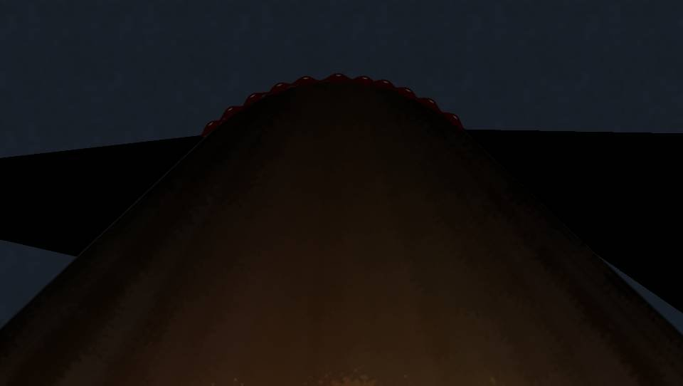
video: 盗視.wmvEveryone pressed their whole bodies against Shigatsu Youka's trunk.
video: 盗視.wmvThen a terrible, violent pain ran through my whole body, like being struck by lightning and burned at the stake at the same time.
Itohime's suffering was reaching me too.
Itohime's suffering was reaching me too.
video: 盗視.wmv
"Agh-gagagagagagaga...!"
―It hurts...! I can't breathe...!
"Natsumi-san... please, open your eyes now...! Everyone else has their eyes closed too, so the Green-Eye Curse-Killing will not happen...!"
―It hurts... it's agony...! Itohime, does it hurt you too...?
―It hurts...! I can't breathe...!
"Natsumi-san... please, open your eyes now...! Everyone else has their eyes closed too, so the Green-Eye Curse-Killing will not happen...!"
―It hurts... it's agony...! Itohime, does it hurt you too...?
video: 盗視.wmv"Ngh...! Natsumi-san, it is because your senses and mine are linked...!
Please open your eyes, quickly! That will free you from the pain!"
―B-but... Itohime... there's something you want to tell me... you haven't finished saying it, right...?
"It is all right. Never mind me...!"
―Hurry and tell me...! I can't... take any more...!
―B-but... Itohime... there's something you want to tell me... you haven't finished saying it, right...?
"It is all right. Never mind me...!"
―Hurry and tell me...! I can't... take any more...!
video: 盗視.wmv"Natsumi-san...
Having become one with Shigatsu Youka, I will die like this, and I will not come back.
Please, bury my broken hairpin at the goshinboku in Motoki-cho.
If you will only do that for me, I truly have no regrets left."
―O-okay... got it...! Ugh...!
"Please, open your eyes. There is nothing more I need to say...!"
―O-okay... got it...! Ugh...!
"Please, open your eyes. There is nothing more I need to say...!"
"Haah! Haah!"
The pain was so intense I nearly passed out, but the moment I opened my eyes, it ebbed away as if it had never been.
The pain was so intense I nearly passed out, but the moment I opened my eyes, it ebbed away as if it had never been.

Everyone in Noh masks and red robes had surrounded Shigatsu Youka's thick trunk and was pressed tight against it.
The blood flowing from them was eating into Shigatsu Youka's body.
One after another the cherry trees wilted, withered, and crumbled like sand.
The blood flowing from them was eating into Shigatsu Youka's body.
One after another the cherry trees wilted, withered, and crumbled like sand.
"Aaaaah Itohimeeeeee!!!"
"Traitor traitor traitor!!!"
 video: 豊岳桜.wmv
video: 豊岳桜.wmvShigatsu Youka was simply a wild creature.
It only tried to grow and reproduce.
Then one day, a girl was possessed by it.
It only tried to grow and reproduce.
Then one day, a girl was possessed by it.
video: 豊岳桜.wmvA living thing seeks the way to reproduce and grow more efficiently and effectively, and evolves.
Her pure heart was exploited by the wild creature, which in time gained human intellect and came to rule humans by cunning means.
This was the evolution of Shigatsu Youka.
Her pure heart was exploited by the wild creature, which in time gained human intellect and came to rule humans by cunning means.
This was the evolution of Shigatsu Youka.
video: 豊岳桜.wmvIt was an irony.
Because each tried to possess what it could never possess, they ended up as a creature beyond its station, and incomplete.
A human cannot live on for centuries, and a fungus cannot have intellect.
Break the law of nature, and―
Because each tried to possess what it could never possess, they ended up as a creature beyond its station, and incomplete.
A human cannot live on for centuries, and a fungus cannot have intellect.
Break the law of nature, and―
Itohime had been taken into the smallest cherry tree, and now it wilted and began to rot.
"Natsumi-san, can you hear me?"
―Yeah.
"Natsumi-san, can you hear me?"
―Yeah.
"Through everyone's help, Shigatsu Youka is about to die out completely.
The goshinboku in Motoki-cho and the hyphae underground will all die, roots and all."
―Then Motoki-cho's saved too?
―Then Motoki-cho's saved too?
"Yes. By the time today's sun rises, life should return to the way it was.
But precognition, of course,
and green eyes,
and the Green-Eye Curse-Killing,
and Droga,
and falsificaso,
every phenomenon connected to Shigatsu Youka will vanish too."
―I see... That's how it should be. It was never something humans should have touched in the first place.
―I see... That's how it should be. It was never something humans should have touched in the first place.
"Natsumi-san... that the last person I met was you truly saved me.
Shigatsu Youka's greatest mistake was infecting you.
You can, in any situation, make the choice that lets everyone be happy.
That is why the many people you have saved are always at your side, helping you.
I was watching, you know―the smiles of the people you saved."
"Indeed, your friends, your family―
and even the companions you met only today are wounding their own bodies, offering their blood, to help you destroy Shigatsu Youka."
―I'm nothing so grand. When everyone's unhappy, it just hurts me too.
I'm only doing what I want. I'm just too blessed, that's all.
"If so, then you all hold each other up. Motoki-cho... I wanted to see it too. Natsumi-san and friends like these―a Motoki-cho with them in it must surely be a wonderful place."
"If so, then you all hold each other up. Motoki-cho... I wanted to see it too. Natsumi-san and friends like these―a Motoki-cho with them in it must surely be a wonderful place."
―Yeah, it's a really good place.
Lots of nature, and the cherry blossoms are beautiful...
wait, the goshinboku in Central Park was Shigatsu Youka, wasn't it.
But because that goshinboku was there, Motoki-cho got to be such a wonderful place.
"Were my existence and Shigatsu Youka's of even the slightest help to you, Natsumi-san?"
"Were my existence and Shigatsu Youka's of even the slightest help to you, Natsumi-san?"
―If that goshinboku hadn't been there, there'd be no Motoki-cho as it is now.
Maybe Haruka and Goto and I would never have met.
No―even my dad and mom, and Haruka's parents too.
Without the goshinboku, we might not even exist.
"Cause and effect is a strange thing.
There is something I learned from a certain human's intellect.
Pandora's box―
in the box that held every dark side of humanity, all its anger, hatred and despair, a single grain of hope.
That hope brought about this miracle...
no, this victory by your own hands."
―Winning, losing... is that really what this is about...?
"Huh?"
―No, I don't feel like I won, or like I beat anyone. I just wanted to go home to Motoki-cho with everyone.
"............"
"Huh?"
―No, I don't feel like I won, or like I beat anyone. I just wanted to go home to Motoki-cho with everyone.
"............"
―Itohime?
"The age I lived in was a world of live or die, win or lose. This country has changed, hasn't it. Surely it has become the rich country Nii-sama wished for."
―Yeah, but it'll be an even better country.
"The age I lived in was a world of live or die, win or lose. This country has changed, hasn't it. Surely it has become the rich country Nii-sama wished for."
―Yeah, but it'll be an even better country.
"Natsumi-san..."
―Hm?
"It is... time. My body too is about to be gone. Truly, I have caused you so much trouble."
―Hey, Itohime.
―Hm?
"It is... time. My body too is about to be gone. Truly, I have caused you so much trouble."
―Hey, Itohime.
"Yes?"
―If you're ever born again... come to Motoki-cho.
"............"
―Okay?
―If you're ever born again... come to Motoki-cho.
"............"
―Okay?
"Yes, gladly.
When that time comes, could I too become someone at your side who wishes for everyone's happiness?"
―Yeah, I'm sure.
"Thank you. Then... until that time, for a little while―"
―See you, Itohime.
―Yeah, I'm sure.
"Thank you. Then... until that time, for a little while―"
―See you, Itohime.
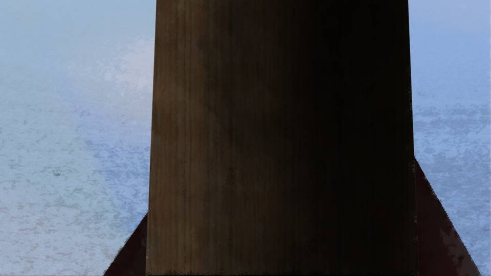
Itohime's tree cracked and began to decay.
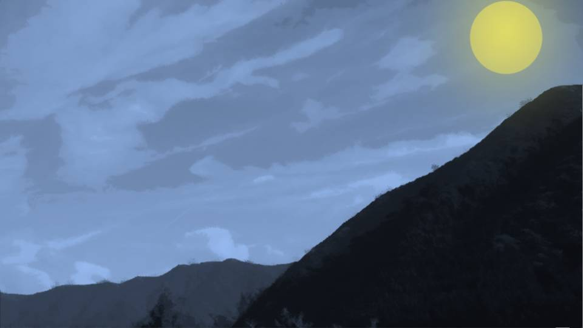
video: 死月妖花死滅上昇.wmvGiving off a dazzling light, the fragments of Itohime rose toward the heavens.
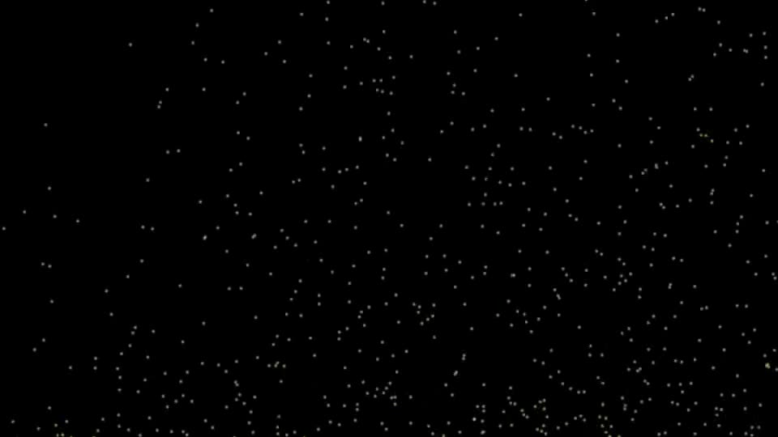
video: 死月妖花死滅下降.wmvAnd those fragments broke into even finer particles and rained down on this land of Arata.
video: 死月妖花死滅下降.wmv
"............?"
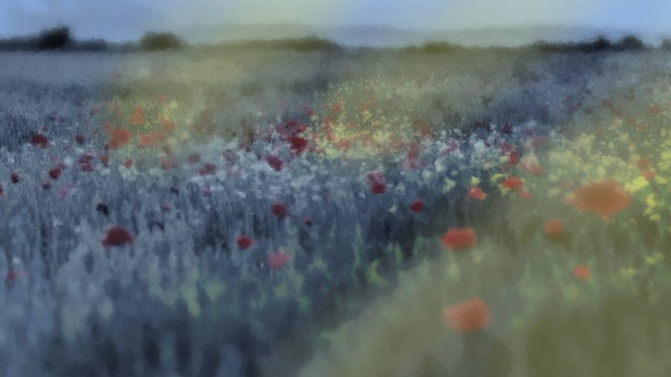
video: 死月妖花死滅下降.wmvShigatsu Youka was supposed to have robbed this ground of all its nourishment, and yet on it, a small flower―
video: 死月妖花死滅下降.wmv
One after another, new flowers were starting to bloom from the ground.
Shigatsu Youka's fragments were returning nourishment to this earth and becoming fertilizer for new life.
The land of Arata, through Shigatsu Youka, was about to greet its second spring this year.
Shigatsu Youka's fragments were returning nourishment to this earth and becoming fertilizer for new life.
The land of Arata, through Shigatsu Youka, was about to greet its second spring this year.
video: 死月妖花死滅下降.wmv
"Natsumi-chan..."
The only one who hadn't put on a Noh mask and red robe, Kana-chan, spoke to me.
The only one who hadn't put on a Noh mask and red robe, Kana-chan, spoke to me.
video: 死月妖花死滅下降.wmv
"Huh?"
"Hm?"
"Kana-chan, both your eyes are blue."
Itohime had said it:
Shigatsu Youka―every phenomenon connected to it would vanish.
So Kana-chan's eyes, too, were back to the color they should be.
"Hm?"
"Kana-chan, both your eyes are blue."
Itohime had said it:
Shigatsu Youka―every phenomenon connected to it would vanish.
So Kana-chan's eyes, too, were back to the color they should be.
video: 死月妖花死滅下降.wmv
"Aha! Then we're all good now!"
"Yeah!"
"Everyooone! It's all good now! Hurry up and show your faces!"
Kana-chan's call was answered, and one of them came toward us.
"Yeah!"
"Everyooone! It's all good now! Hurry up and show your faces!"
Kana-chan's call was answered, and one of them came toward us.
video: 死月妖花死滅下降.wmv
"Natsumi..."
"Haruka! Are you okay?"
"Yeah! We all shared our blood, after all! ...That came out weird, huh."
With a little blood on her face, Haruka laughed, ha ha ha.
The tension of a moment ago seemed like a lie beside Haruka's smile.
"Haruka! Are you okay?"
"Yeah! We all shared our blood, after all! ...That came out weird, huh."
With a little blood on her face, Haruka laughed, ha ha ha.
The tension of a moment ago seemed like a lie beside Haruka's smile.
video: 死月妖花死滅下降.wmv
"Case closed, then!"
From under this Noh mask came Goto's voice.
From under this Noh mask came Goto's voice.
video: 死月妖花死滅下降.wmv
"Whoa... I'd know it was you even dressed like that..."
"Good thing I had my eyes closed..."
"Good thing I had my eyes closed..."
video: 死月妖花死滅下降.wmv
"Grrr! You mean my disguise was for nothing!?"
"Ahaha! Goto, you're adorable! Like a lesser anteater!"
"Ahaha! Goto, you're adorable! Like a lesser anteater!"
video: 死月妖花死滅下降.wmv
"Yeah, they've got those! You see them at the zoo!"
"Grrr!"
"Grrr!"
video: 死月妖花死滅下降.wmv
"Mm... Everyone, good work."
video: 死月妖花死滅下降.wmv
"Thank goodness, thank goodness!"
video: 死月妖花死滅下降.wmv
"Everyone, you did very well."
video: 死月妖花死滅下降.wmv
"Just what you'd expect of Mifuyu-san's daughter and her friends."
video: 死月妖花死滅下降.wmv
"My, my, Eiichiro ended up with quite the wife and child."
video: 死月妖花死滅下降.wmv
"Grand Witch-sama! Please come here! Something's wrong!"
video: 死月妖花死滅下降.wmv
"What is it, Shirozaki!?"
video: 死月妖花死滅下降.wmv
The residents, their Noh masks off, were gathered around something.
When I looked that way...
When I looked that way...
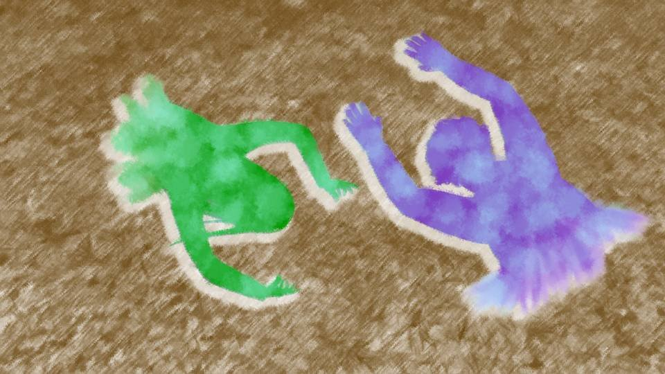
video: 死月妖花死滅下降.wmv"H-hey... seriously...?"
"No way!? Wasn't it all over!?"
"No way!? Wasn't it all over!?"
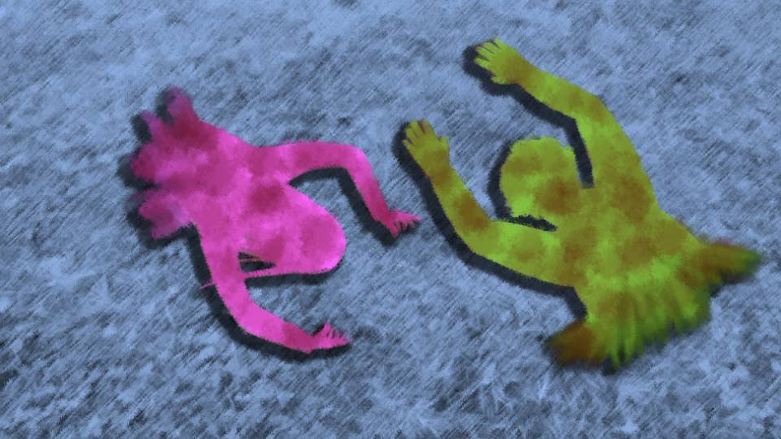
video: 死月妖花死滅下降.wmv"Ah... uuh..."
"Gaaah..."
Two human bodies, skin festering, giving off a stench―Sakura-san and Ojisan.
"Gaaah..."
Two human bodies, skin festering, giving off a stench―Sakura-san and Ojisan.
video: 死月妖花死滅下降.wmv
"Eiichiro-san!"
"Hey, Mom!"
Obasan ran over to the two of them.
"Hey, Mom!"
Obasan ran over to the two of them.
video: 死月妖花死滅下降.wmv
"Mi... fu... yu... chan..."
"Eiichiro-san! It's me, Mifuyu!"
"I'm... sorry... I've... all this time..."
"It's really, really you, Eiichiro-san!?"
Obasan took Ojisan's hand.
But―
"Eiichiro-san! It's me, Mifuyu!"
"I'm... sorry... I've... all this time..."
"It's really, really you, Eiichiro-san!?"
Obasan took Ojisan's hand.
But―
video: 死月妖花死滅下降.wmv
Ojisan's skin and flesh slithered off his hand, and the bone lay bare.
Shigatsu Youka's protection was gone, and their bodies were coming apart like the corpses they were.
But they seemed to still be conscious.
Shigatsu Youka has been destroyed, and yet they're conscious. That means...
Shigatsu Youka's protection was gone, and their bodies were coming apart like the corpses they were.
But they seemed to still be conscious.
Shigatsu Youka has been destroyed, and yet they're conscious. That means...
video: 死月妖花死滅下降.wmv
"Ojisan...
Is it really... really you, Ojisan...?"
"Ugh... Natsu... mi... chan"
I knelt beside Ojisan too.
"Ugh... Natsu... mi... chan"
I knelt beside Ojisan too.
video: 死月妖花死滅下降.wmv
"Ojisan! I've wanted to apologize for so long! Because of me, you...!"
"No... Your fault... it wasn't..."
"Haruka! Come here! Let your father hear your voice!"
Still at a loss, Haruka came toward us too, one fearful step at a time.
"No... Your fault... it wasn't..."
"Haruka! Come here! Let your father hear your voice!"
Still at a loss, Haruka came toward us too, one fearful step at a time.
video: 死月妖花死滅下降.wmv
"Dad...
Dad! It's really you!?"
"Haruka... you've grown... so big..."
"Yeah! Mom's here, and Natsumi, and everyone, so I'm doing great!"
"Good..."
Ojisan smiled, and the skin around his mouth slipped right off.
"Haruka... you've grown... so big..."
"Yeah! Mom's here, and Natsumi, and everyone, so I'm doing great!"
"Good..."
Ojisan smiled, and the skin around his mouth slipped right off.
video: 死月妖花死滅下降.wmv
"Eiichiro-san, I'm so glad I married you after all!
I'm so glad I got to be your wife!"
"Mi... fu... yu... cha..."
"No! To watch Eiichiro-san die, twice...!"
Obasan leaned against Ojisan's body and collapsed in tears.
"Mi... fu... yu... cha..."
"No! To watch Eiichiro-san die, twice...!"
Obasan leaned against Ojisan's body and collapsed in tears.
video: 死月妖花死滅下降.wmv
"Mom!"
"Sakura!"
Beside us, Chiga-nee, Kotaro-san, and Kana-chan were gathered around Sakura-san.
"Sakura!"
Beside us, Chiga-nee, Kotaro-san, and Kana-chan were gathered around Sakura-san.
video: 死月妖花死滅下降.wmv
"Chi... gaya...
Kana... Kota..."
"Mom...! I missed you! All this time, all this time, I wanted to see you, Mom...!"
"Um... I'm Kana..."
Kana-chan seemed at a loss, facing her real mother for the first time.
"Mom...! I missed you! All this time, all this time, I wanted to see you, Mom...!"
"Um... I'm Kana..."
Kana-chan seemed at a loss, facing her real mother for the first time.
video: 死月妖花死滅下降.wmv
"Ka... na...
Let me see... your face... more..."
"Mm... Go on, Kana."
Chiga-nee nudged Kana-chan forward with a push on the back.
Kana-chan still seemed at a loss, but even so she walked over to Sakura-san and crouched beside her.
"Mm... Go on, Kana."
Chiga-nee nudged Kana-chan forward with a push on the back.
Kana-chan still seemed at a loss, but even so she walked over to Sakura-san and crouched beside her.
video: 死月妖花死滅下降.wmv
Sakura-san reached out a festering hand and laid it on Kana-chan's face.
The rotten skin met her cheek with a wet slap, but Kana-chan didn't resist at all.
Kana-chan's cheek ran with dark red blood from Sakura-san's hand.
As if to thin that blood, Kana-chan's tears mingled with it.
The rotten skin met her cheek with a wet slap, but Kana-chan didn't resist at all.
Kana-chan's cheek ran with dark red blood from Sakura-san's hand.
As if to thin that blood, Kana-chan's tears mingled with it.
video: 死月妖花死滅下降.wmv
"Hee hee...
She looks... so much like me... when I was small..."
"Mommy... Mommy! I missed you so much!"
"Mommy... Mommy! I missed you so much!"
video: 死月妖花死滅下降.wmv
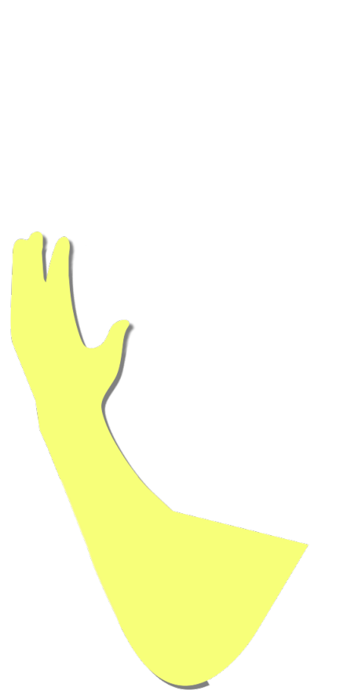
Kana-chan clasped Sakura-san's hand where it lay on her face.
But Kana-chan was holding only Sakura-san's hand.
Sakura-san's hand had rotted through at the wrist and torn off.
But Kana-chan was holding only Sakura-san's hand.
Sakura-san's hand had rotted through at the wrist and torn off.
video: 死月妖花死滅下降.wmv
"No...! Mommy! We finally got to meet...!"
"Kana... Mommy is... so happy... to see you..."
"No! I want to stay with Mommy!"
"Ka... na..."
"Mommy...!"
Kana-chan threw herself over the rotting, reeking Sakura-san.
"Kana... Mommy is... so happy... to see you..."
"No! I want to stay with Mommy!"
"Ka... na..."
"Mommy...!"
Kana-chan threw herself over the rotting, reeking Sakura-san.
video: 死月妖花死滅下降.wmv
―Before long, with those words as their last, the two of them decayed until nothing but bones remained.
Even these fragments of Shigatsu Youka could not bring the dead back to life.
The dead do not come back.
That is the law of nature.
The way things should be.
Even these fragments of Shigatsu Youka could not bring the dead back to life.
The dead do not come back.
That is the law of nature.
The way things should be.
video: 死月妖花死滅下降.wmv
It's hard to believe these two were moving around until just a moment ago.
No, it's only natural that I can't believe it.
After all, impossible things happening had become only natural.
No, it's only natural that I can't believe it.
After all, impossible things happening had become only natural.
video: 死月妖花死滅下降.wmv
But at the very, very end, I was able to grant an impossible wish: to apologize to the person I'd wanted to apologize to.
Haruka and Obasan got to say goodbye to Ojisan, who had died suddenly before their eyes.
Meeting her mother for the first time, Kana-chan got to let her know she was alive and well.
Haruka and Obasan got to say goodbye to Ojisan, who had died suddenly before their eyes.
Meeting her mother for the first time, Kana-chan got to let her know she was alive and well.
video: 死月妖花死滅下降.wmv
Surely Sakura-san and Ojisan had not been without awareness.
Shigatsu Youka had manipulated them as it pleased, and all along they had been crying out and suffering inside their bodies.
Shigatsu Youka had manipulated them as it pleased, and all along they had been crying out and suffering inside their bodies.
video: 死月妖花死滅下降.wmv
Freed from that hold, the two of them were allowed to spend a last moment with their families.
This after-death family gathering, never normally allowed, may have been what they earned in return for enduring all that pain.
This after-death family gathering, never normally allowed, may have been what they earned in return for enduring all that pain.
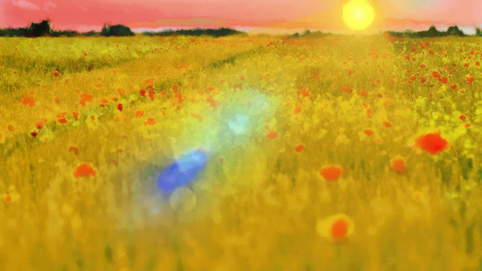
By the time every glowing fragment of the tree had fallen to the earth, a new sun was beginning to show its face.
Shiyo 800, April 8― Today is the anniversary of Eiichiro Niimura-san's death.
Was what happened today a miracle, or a nightmare?
This is what I think.
Today is the day a nightmare that had gone on since 10 years ago― no, for 800 years, was finally lifted by a miracle.
Shiyo 800, April 8― Today is the anniversary of Eiichiro Niimura-san's death.
Was what happened today a miracle, or a nightmare?
This is what I think.
Today is the day a nightmare that had gone on since 10 years ago― no, for 800 years, was finally lifted by a miracle.
The curse-killings will never happen again.
Precognition, green eyes and Droga are gone, corpses no longer walk, and the world has simply become an ordinary one.
Into this ordinary world shone a morning sun more beautiful than any I had ever seen.
Precognition, green eyes and Droga are gone, corpses no longer walk, and the world has simply become an ordinary one.
Into this ordinary world shone a morning sun more beautiful than any I had ever seen.
"Come on, let's go home. To Motoki-cho."
"Yeah, let's."

"I'm sleepy..."
"What are you lot saying! The thirteenth-year memorial service goes ahead as planned!
Not holding the service here in the Arata settlement is unthinkable, barring something extraordinary!"

"What are you talking about! Something way out of the ordinary just happened!"
"Please...
I got to see Eiichiro's face one last time.
At least let me mourn him properly."
"Oh, come on... just say so from the start...
But isn't the settlement a mess now?
Cherry trees sprouted all over the place, right?"
"Mm... I wonder if the house is wrecked..."
"The exchange diary... it's not scattered all over, is it...?"

Each of us seemed to have something on our minds, from grand intentions to small worries, but we decided to go down the mountain together.
Fortunately, nobody was badly hurt, and the bleeding wasn't serious either.
But this descent was especially hard on bodies we'd pushed all night without sleep.
Goto rode piggyback on Chiga-nee, and Haruka and I lent Kana-chan our shoulders on the way down.
And held to my chest―
Fortunately, nobody was badly hurt, and the bleeding wasn't serious either.
But this descent was especially hard on bodies we'd pushed all night without sleep.
Goto rode piggyback on Chiga-nee, and Haruka and I lent Kana-chan our shoulders on the way down.
And held to my chest―
Ojisan's and Sakura-san's remains had one more set of remains lying beside them, along with the broken hairpin.
I wrapped the tiny remains of Itohime and the hairpin in a red robe and held them to my chest.
Obasan held Ojisan's remains, and Kotaro-san, Sakura-san's, in their arms as we came down the mountain together.
I wrapped the tiny remains of Itohime and the hairpin in a red robe and held them to my chest.
Obasan held Ojisan's remains, and Kotaro-san, Sakura-san's, in their arms as we came down the mountain together.

"Mm... There, that's done.
Now, let's head back."

"Huh? Almost no cherry trees came up around here."
Here and there along the path from the secret base to the settlement were holes where cherry trees seemed to have grown.
But the houses and buildings had not been damaged.
Here and there along the path from the secret base to the settlement were holes where cherry trees seemed to have grown.
But the houses and buildings had not been damaged.
"Well, bodies are buried in the graveyard, and animal carcasses get buried away from the settlement."
"I see, so the cherry trees came up where the bodies were buried."
"I see, so the cherry trees came up where the bodies were buried."
"There's that urban legend too, that there are bodies buried under cherry trees."
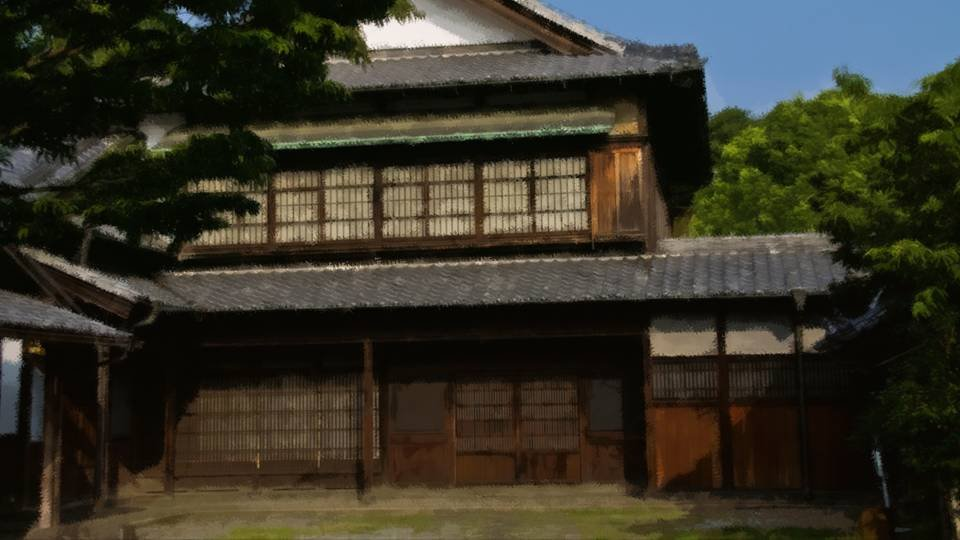
The cherry tree at the Niimura main house had vanished too, as I'd expected.
"Hey, Goto. Did Shigatsu Youka really disappear...?
I mean, it's a fungus, right? If even a little piece is left, won't it grow back...?"
"I can't rule it out. But to reach that size again would take thousands of years. That might be better left to the Arata of the future."
"So in a few thousand years, cherry trees might sprout here again..."
"I can't rule it out. But to reach that size again would take thousands of years. That might be better left to the Arata of the future."
"So in a few thousand years, cherry trees might sprout here again..."

Shigatsu Youka... will it come back to life again someday?
But I don't think so.
Itohime said it:
Shigatsu Youka has been destroyed.
That's all.
Her words are simply what I want to believe.
But I don't think so.
Itohime said it:
Shigatsu Youka has been destroyed.
That's all.
Her words are simply what I want to believe.
Itohime. Today is your death anniversary too, isn't it.
Rest in peace.
And get along with Nii-sama over there.
Rest in peace.
And get along with Nii-sama over there.